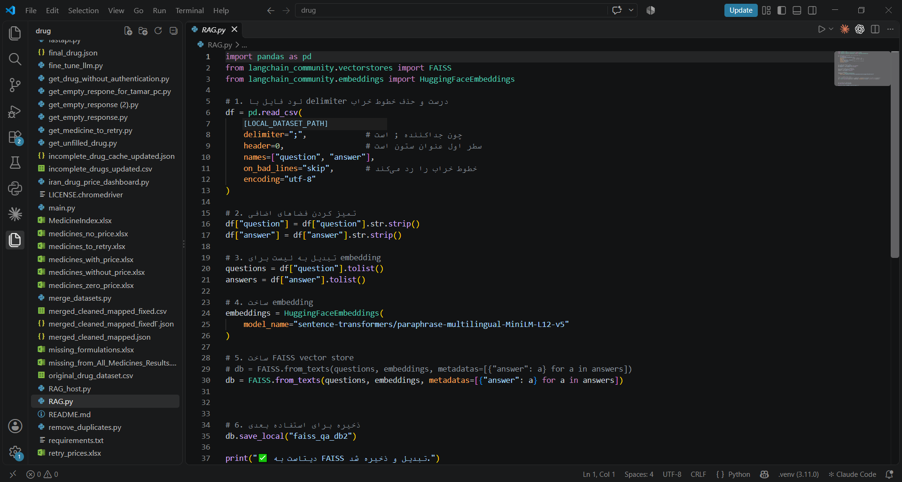
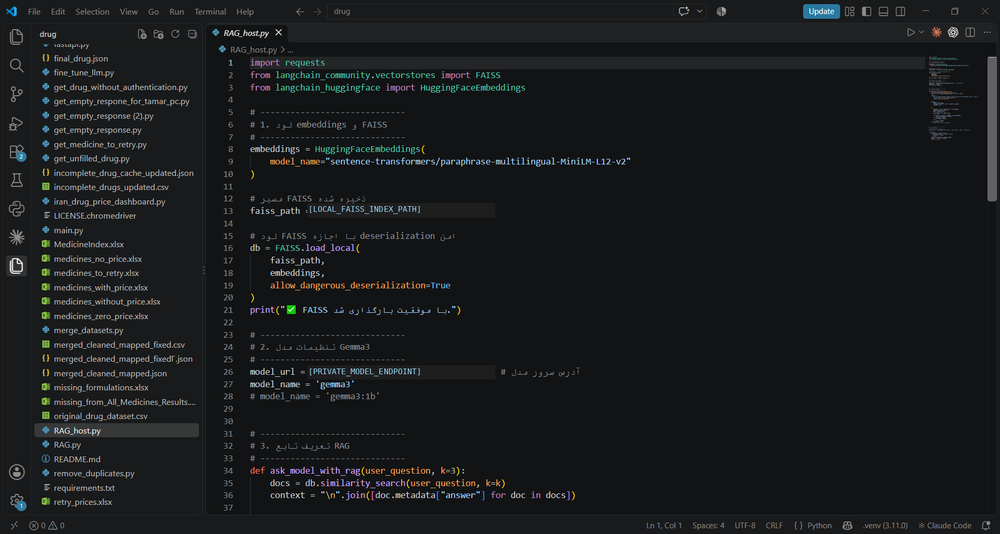
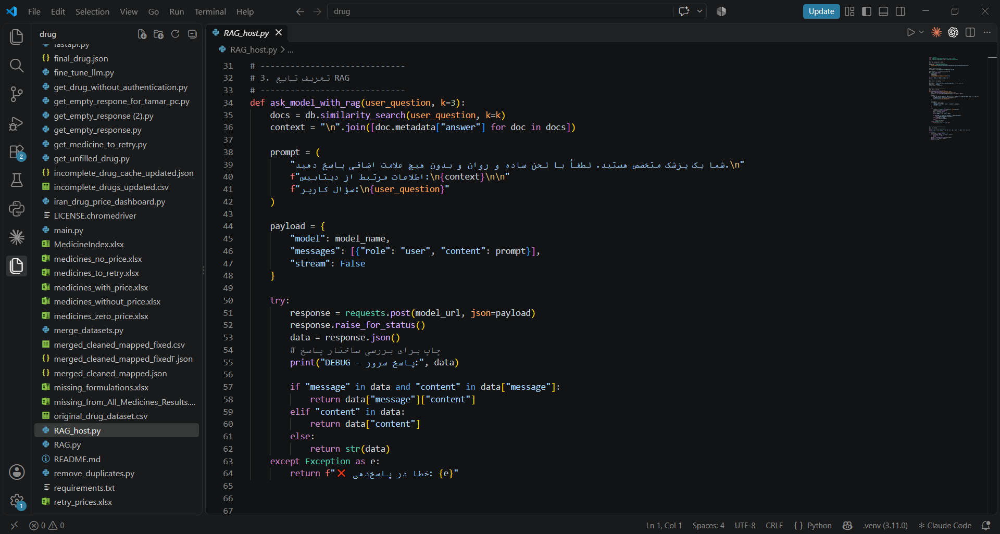

PHARMACEUTICAL NLP · RETRIEVAL-AUGMENTED GENERATION
Pharmaceutical Information Assistant
A research prototype that retrieves relevant pharmaceutical question-and-answer records through multilingual semantic search, then supplies the retrieved context to Gemma 3 to generate a conversational response.

Actual development environment · RAG.py · Embedding and FAISS index construction
Project Overview
The assistant was developed as a retrieval-augmented question-answering prototype for pharmaceutical information. A prepared question-and-answer dataset is embedded and indexed in FAISS. At query time, the system retrieves the most similar records and passes their stored answers, together with the user's question, to a Gemma 3 model endpoint.
This is a separate project from the Pharmaceutical Data & Price Discovery dashboard. The RAG assistant focuses on retrieving information for conversational answers; the price dashboard focuses on structured catalogue search, filters, and price exploration.
RAG Architecture
The supplied implementation follows the retrieval-then-generation pattern, with the retrieved answer text inserted into the prompt sent to the language model.
Question-and-answer dataset
Reads a prepared CSV with question and answer columns, using a semicolon delimiter and basic whitespace cleanup.
Multilingual embeddings
Transforms the question texts into dense vector representations using a Sentence Transformers multilingual MiniLM model.
FAISS vector indexing
Indexes the question vectors and stores each corresponding answer in document metadata for later retrieval.
Semantic retrieval
Searches the vector index for the three questions most similar to the user's input.
Context construction
Combines the answers associated with the retrieved documents and adds the original user question.
LLM response generation
Sends the prompt to a Gemma 3 model endpoint through an HTTP request and extracts the generated response.
Implementation Details
Vector index construction
The indexing script creates FAISS from the question texts and stores the paired answers in each document's metadata.
Query-time retrieval
The serving script calls similarity search with the user question, retrieves three documents by default, and extracts their answer fields.
Local model endpoint
The model is accessed through an HTTP chat endpoint. The endpoint address is configured outside the public portfolio page.
Prototype scope
The supplied files demonstrate the retrieval and generation pipeline. They do not provide a formal benchmark of answer quality or clinical validation.
Core retrieval pattern from the implementation
def ask_model_with_rag(user_question, k=3):
docs = db.similarity_search(user_question, k=k)
context = "\n".join(
[doc.metadata["answer"] for doc in docs]
)
prompt = (
f"Retrieved information:\n{context}\n\n"
f"User question:\n{user_question}"
)
# Send prompt to the Gemma 3 chat endpoint
response = requests.post(model_url, json=payload)Development Screenshots
The following images are actual screenshots from the supplied Visual Studio Code environment. Local machine paths and the private model endpoint have been redacted for publication.
01 · Embedding and index construction
RAG.py — loading the Q&A dataset, creating multilingual embeddings, building the FAISS vector store, and saving the index.

02 · Vector store and model setup
RAG_host.py — loading the FAISS index with its embedding model and configuring the Gemma 3 chat endpoint.

03 · Retrieval and response generation
RAG_host.py — retrieving the top matching documents, assembling the context, creating the prompt, and handling the model response.
My Work
- Prepared a question-and-answer dataset for semantic retrieval.
- Implemented multilingual text embedding and FAISS vector indexing with LangChain.
- Developed query-time similarity search and retrieved-context construction.
- Connected the retrieval pipeline to Gemma 3 through an HTTP-based chat interface.
- Worked on supporting pharmaceutical data collection and preprocessing scripts.